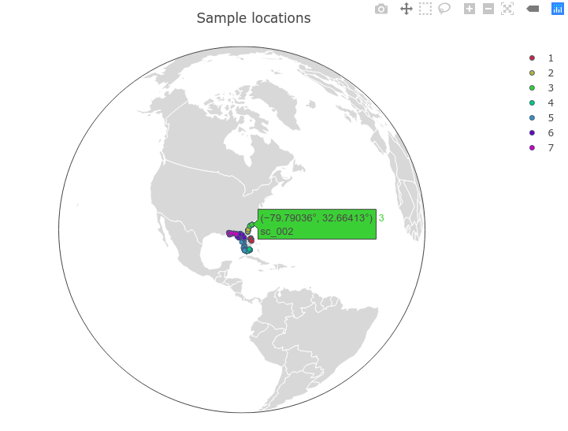

View/edit PopObj
These are the included PopObj viewing and manipulating commands. Using standard Julia conventions, only commands ending with a bang ! are mutable, meaning they alter the input data. This means that a command like popid will show you population ID's, whereas popid! will change them in your PopObj input.
To follow along like a tutorial, use the gulfsharks data. Load the data in if you haven't already:
julia> using PopGen julia> sharks = gulfsharks()
individuals
view individuals' names
indnames(x::PopObj)
PopObj. This is equivalent to PopObj.ind
indnames(sharks)
212-element Array{String,1}:
"cc_001"
"cc_002"
"cc_003"
"cc_005"
"cc_007"
"cc_008"
"cc_009"
"cc_010"
"cc_012"
"cc_013"
⋮
"seg_023"
"seg_024"
"seg_025"
"seg_026"
"seg_027"
"seg_028"
"seg_029"
"seg_030"
"seg_031"
remove individuals
remove_inds!(x::PopObj, inds::Union{Array{String,1}})
Removes selected individuals from a PopObj. Input can be a single individual, or an array of individuals.
Examples:
julia> remove_inds!(sharks, "cc_001")
Object of type PopObj:
Longitude:
["-80.59958", "-80.42248", "-80.35779"] … ["-87.36617", "-85.71432", "-85.71432"]
Latitude:
["28.30624", "28.30787", "28.30234"] … ["30.05217", "29.82344", "29.82344"]
Number of individuals: 211
["cc_002", "cc_003", "cc_005"] … ["seg_029", "seg_030", "seg_031"]
Number of loci: 2213
["contig_35208", "contig_23109", "contig_4493"] … ["contig_19384", "contig_22368", "contig_2784"]
Ploidy: 2
Number of populations: 7
#Inds | Pop
--------------
20 | 1
30 | 2
28 | 3
65 | 4
28 | 5
20 | 6
20 | 7
Available fields: ind, popid, loci, ploidy, genotypes, longitude, latitude
julia> remove_inds!(sharks, ["cc_001","cc_002", "cc_003"])
NOTICE: ind "cc_001" not found!
Object of type PopObj:
Longitude:
["-80.34815", "-80.34822", "-80.43027"] … ["-87.36617", "-85.71432", "-85.71432"]
Latitude:
["28.30624", "28.30787", "28.30234"] … ["30.05217", "29.82344", "29.82344"]
Number of individuals: 209
["cc_005", "cc_007", "cc_008"] … ["seg_029", "seg_030", "seg_031"]
Number of loci: 2213
["contig_35208", "contig_23109", "contig_4493"] … ["contig_19384", "contig_22368", "contig_2784"]
Ploidy: 2
Number of populations: 7
#Inds | Pop
--------------
18 | 1
30 | 2
28 | 3
65 | 4
28 | 5
20 | 6
20 | 7
Available fields: ind, popid, loci, ploidy, genotypes, longitude, latitude
ind not found!
If removing a single individual and it is not found in the PopObj, an error will be returned. However, if removing multiple individuals, you will receive a notice above the PopObj summary indicating which individuals were not found, while removing the ones that were.
population ID's
view population names
popid(x::PopObj; listall::Bool = false)
.popid, you can also view them with the popid() command, which by default shows you a summary of the number of individuals in each population, just like you see when importing a file. The #Inds means "number of individuals", and Pop refers to the population names.
julia> popid(sharks)
#Inds | Pop
--------------
21 | 1
30 | 2
28 | 3
65 | 4
28 | 5
20 | 6
20 | 7
You can use the keyword listall=true to display each individual and their associated population as a DataFrame. You'll notice the DataFrame looks remarkably like the first two columns of the one from locations, and it sort of is. Unlike locations, this will not give you an error when location data is missing.
julia> popid(sharks, listall=true)
212×2 DataFrames.DataFrame │ Row │ ind │ population │ │ │ String │ Union… │ ├─────┼─────────┼────────────┤ │ 1 │ cc_001 │ 1 │ │ 2 │ cc_002 │ 1 │ │ 3 │ cc_003 │ 1 │ │ 4 │ cc_005 │ 1 │ │ 5 │ cc_007 │ 1 │ │ 6 │ cc_008 │ 1 │ │ 7 │ cc_009 │ 1 │ ⋮ │ 205 │ seg_024 │ 7 │ │ 206 │ seg_025 │ 7 │ │ 207 │ seg_026 │ 7 │ │ 208 │ seg_027 │ 7 │ │ 209 │ seg_028 │ 7 │ │ 210 │ seg_029 │ 7 │ │ 211 │ seg_030 │ 7 │ │ 212 │ seg_031 │ 7 │
rename populations
popid!(x::PopObj; rename::Dict)
PopObj (the .popid). Uses a Dict of [popid] => replacement to rename. It returns popid(::PopObj,listall=true) of your renamed PopObj.
# create a dictionary of name conversions julia> new_popnames = Dict(1 => "Cape Canaveral", 2 => "Georgia", 3 => "S Carolina", 4 => "FL Keys", 5 => "Mideast Gulf", 6 => "Northeast Gulf", 7 => "Southeast Gulf") julia> popid!(sharks, rename = new_popnames)
212×2 DataFrame │ Row │ ind │ population │ │ │ String │ Union… │ ├─────┼─────────┼────────────────┤ │ 1 │ cc_001 │ Cape Canaveral │ │ 2 │ cc_002 │ Cape Canaveral │ │ 3 │ cc_003 │ Cape Canaveral │ │ 4 │ cc_005 │ Cape Canaveral │ │ 5 │ cc_007 │ Cape Canaveral │ │ 6 │ cc_008 │ Cape Canaveral │ │ 7 │ cc_009 │ Cape Canaveral │ │ 8 │ cc_010 │ Cape Canaveral │ │ 9 │ cc_012 │ Cape Canaveral │ │ 10 │ cc_013 │ Cape Canaveral │ │ 11 │ cc_014 │ Cape Canaveral │ │ 12 │ cc_015 │ Cape Canaveral │ │ 13 │ cc_016 │ Cape Canaveral │ │ 14 │ cc_017 │ Cape Canaveral │ │ 15 │ cc_018 │ Cape Canaveral │ │ 16 │ cc_019 │ Cape Canaveral │ │ 17 │ cc_020 │ Cape Canaveral │ │ 18 │ cc_021 │ Cape Canaveral │ ⋮ │ 194 │ seg_003 │ Southeast Gulf │ │ 195 │ seg_009 │ Southeast Gulf │ │ 196 │ seg_010 │ Southeast Gulf │ │ 197 │ seg_011 │ Southeast Gulf │ │ 198 │ seg_012 │ Southeast Gulf │ │ 199 │ seg_014 │ Southeast Gulf │ │ 200 │ seg_015 │ Southeast Gulf │ │ 201 │ seg_016 │ Southeast Gulf │ │ 202 │ seg_018 │ Southeast Gulf │ │ 203 │ seg_021 │ Southeast Gulf │ │ 204 │ seg_023 │ Southeast Gulf │ │ 205 │ seg_024 │ Southeast Gulf │ │ 206 │ seg_025 │ Southeast Gulf │ │ 207 │ seg_026 │ Southeast Gulf │ │ 208 │ seg_027 │ Southeast Gulf │ │ 209 │ seg_028 │ Southeast Gulf │ │ 210 │ seg_029 │ Southeast Gulf │ │ 211 │ seg_030 │ Southeast Gulf │ │ 212 │ seg_031 │ Southeast Gulf │
genotypes per locus
view loci
loci(x::PopObj, loci = nothing)
View the genotypes of all individuals for specific loci in a PopObj. Default shows all genotypes for all individuals. Returns a DataFrame.
julia> loci(sharks)
212×2215 DataFrames.DataFrame. Omitted printing of 2209 columns │ Row │ ind │ population │ contig_10001 │ contig_10013 │ contig_10028 │ contig_10035 │ │ │ String │ Categorical… │ Any │ Any │ Any │ Any │ ├─────┼─────────┼──────────────┼──────────────┼──────────────┼──────────────┼──────────────┤ │ 1 │ cc_001 │ 1 │ (1, 1) │ (1, 1) │ (1, 1) │ (1, 1) │ │ 2 │ cc_002 │ 1 │ (1, 1) │ (1, 1) │ (1, 1) │ (1, 1) │ │ 3 │ cc_003 │ 1 │ (1, 1) │ (1, 1) │ (2, 1) │ (1, 1) │ │ 4 │ cc_005 │ 1 │ (1, 1) │ (1, 1) │ (1, 1) │ (2, 1) │ │ 5 │ cc_007 │ 1 │ (1, 1) │ (1, 1) │ (2, 1) │ (2, 1) │ │ 6 │ cc_008 │ 1 │ (1, 1) │ (1, 2) │ (2, 1) │ (1, 1) │ │ 7 │ cc_009 │ 1 │ (1, 1) │ (1, 2) │ (2, 1) │ (2, 1) │ ⋮ │ 205 │ seg_024 │ 7 │ (1, 1) │ (1, 1) │ (1, 1) │ (1, 1) │ │ 206 │ seg_025 │ 7 │ (1, 1) │ (1, 1) │ (2, 1) │ (2, 2) │ │ 207 │ seg_026 │ 7 │ (1, 1) │ (1, 1) │ (2, 1) │ (2, 2) │ │ 208 │ seg_027 │ 7 │ (1, 1) │ (1, 1) │ (1, 1) │ (2, 2) │ │ 209 │ seg_028 │ 7 │ (1, 1) │ (1, 1) │ (2, 1) │ (2, 2) │ │ 210 │ seg_029 │ 7 │ (1, 1) │ (1, 1) │ (2, 1) │ (2, 2) │ │ 211 │ seg_030 │ 7 │ (1, 1) │ (1, 1) │ (2, 1) │ (2, 2) │ │ 212 │ seg_031 │ 7 │ (1, 1) │ (1, 1) │ (1, 1) │ (1, 1) │
Add a second argument (no keywords!) to specify a single locus (string) or multiple loci (array of strings) to display
julia> loci(sharks, "contig_10001")
212×3 DataFrames.DataFrame │ Row │ ind │ population │ contig_10001 │ │ │ String │ Categorical… │ Any │ ├─────┼─────────┼──────────────┼──────────────┤ │ 1 │ cc_001 │ 1 │ (1, 1) │ │ 2 │ cc_002 │ 1 │ (1, 1) │ │ 3 │ cc_003 │ 1 │ (1, 1) │ │ 4 │ cc_005 │ 1 │ (1, 1) │ │ 5 │ cc_007 │ 1 │ (1, 1) │ │ 6 │ cc_008 │ 1 │ (1, 1) │ │ 7 │ cc_009 │ 1 │ (1, 1) │ ⋮ │ 205 │ seg_024 │ 7 │ (1, 1) │ │ 206 │ seg_025 │ 7 │ (1, 1) │ │ 207 │ seg_026 │ 7 │ (1, 1) │ │ 208 │ seg_027 │ 7 │ (1, 1) │ │ 209 │ seg_028 │ 7 │ (1, 1) │ │ 210 │ seg_029 │ 7 │ (1, 1) │ │ 211 │ seg_030 │ 7 │ (1, 1) │ │ 212 │ seg_031 │ 7 │ (1, 1) │
julia> loci(sharks, ["contig_10001", "contig_10028"])
212×4 DataFrames.DataFrame │ Row │ ind │ population │ contig_10001 │ contig_10028 │ │ │ String │ Categorical… │ Any │ Any │ ├─────┼─────────┼──────────────┼──────────────┼──────────────┤ │ 1 │ cc_001 │ 1 │ (1, 1) │ (1, 1) │ │ 2 │ cc_002 │ 1 │ (1, 1) │ (1, 1) │ │ 3 │ cc_003 │ 1 │ (1, 1) │ (2, 1) │ │ 4 │ cc_005 │ 1 │ (1, 1) │ (1, 1) │ │ 5 │ cc_007 │ 1 │ (1, 1) │ (2, 1) │ │ 6 │ cc_008 │ 1 │ (1, 1) │ (2, 1) │ │ 7 │ cc_009 │ 1 │ (1, 1) │ (2, 1) │ ⋮ │ 205 │ seg_024 │ 7 │ (1, 1) │ (1, 1) │ │ 206 │ seg_025 │ 7 │ (1, 1) │ (2, 1) │ │ 207 │ seg_026 │ 7 │ (1, 1) │ (2, 1) │ │ 208 │ seg_027 │ 7 │ (1, 1) │ (1, 1) │ │ 209 │ seg_028 │ 7 │ (1, 1) │ (2, 1) │ │ 210 │ seg_029 │ 7 │ (1, 1) │ (2, 1) │ │ 211 │ seg_030 │ 7 │ (1, 1) │ (2, 1) │ │ 212 │ seg_031 │ 7 │ (1, 1) │ (1, 1) │
remove loci
remove_loci!(x::PopObj, loci::Union{String, Array{String,1}})
Removes selected loci from a PopObj. Input can be a single locus, or an array of loci.
Examples:
julia> remove_loci!(sharks, "contig_35208") ;
Object of type PopObj:
Longitude:
["-80.59928", "-80.59954", "-80.59958"] … ["-87.36617", "-85.71432", "-85.71432"]
Latitude:
["28.30624", "28.30787", "28.30234"] … ["30.05217", "29.82344", "29.82344"]
Number of individuals: 212
["cc_001", "cc_002", "cc_003"] … ["seg_029", "seg_030", "seg_031"]
Number of loci: 2212
["contig_23109", "contig_4493", "contig_10742"] … ["contig_19384", "contig_22368", "contig_2784"]
Ploidy: 2
Number of populations: 7
#Inds | Pop
--------------
21 | 1
30 | 2
28 | 3
65 | 4
28 | 5
20 | 6
20 | 7
Available fields: ind, popid, loci, ploidy, genotypes, longitude, latitude
julia> remove_loci!(sharks, ["contig_35208", "contig_23109", "contig_4493"])
NOTICE: locus "contig_35208" not found
Object of type PopObj:
Longitude:
["-80.59928", "-80.59954", "-80.59958"] … ["-87.36617", "-85.71432", "-85.71432"]
Latitude:
["28.30624", "28.30787", "28.30234"] … ["30.05217", "29.82344", "29.82344"]
Number of individuals: 212
["cc_001", "cc_002", "cc_003"] … ["seg_029", "seg_030", "seg_031"]
Number of loci: 2210
["contig_10742", "contig_14898", "contig_8483"] … ["contig_19384", "contig_22368", "contig_2784"]
Ploidy: 2
Number of populations: 7
#Inds | Pop
--------------
21 | 1
30 | 2
28 | 3
65 | 4
28 | 5
20 | 6
20 | 7
Available fields: ind, popid, loci, ploidy, genotypes, longitude, latitude
locus not found!
If removing a single locus and it is not found in the PopObj, an error will be returned. However, if removing multiple loci, you will receive a notice above the PopObj summary indicating which loci were not found, while removing the ones that were.
genotypes per individual
view specific genotypes
Sometimes you want/need to view genotypes of specific individuals, and that's what genotypes is for. By default, the command will show you a DataFrame of the genotypes of all individuals for all loci.
julia> genotypes(sharks)
212×2215 DataFrames.DataFrame. Omitted printing of 2209 columns │ Row │ ind │ population │ contig_10001 │ contig_10013 │ contig_10028 │ contig_10035 │ │ │ String │ Categorical… │ Any │ Any │ Any │ Any │ ├─────┼─────────┼──────────────┼──────────────┼──────────────┼──────────────┼──────────────┤ │ 1 │ cc_001 │ 1 │ (1, 1) │ (1, 1) │ (1, 1) │ (1, 1) │ │ 2 │ cc_002 │ 1 │ (1, 1) │ (1, 1) │ (1, 1) │ (1, 1) │ │ 3 │ cc_003 │ 1 │ (1, 1) │ (1, 1) │ (2, 1) │ (1, 1) │ │ 4 │ cc_005 │ 1 │ (1, 1) │ (1, 1) │ (1, 1) │ (2, 1) │ │ 5 │ cc_007 │ 1 │ (1, 1) │ (1, 1) │ (2, 1) │ (2, 1) │ │ 6 │ cc_008 │ 1 │ (1, 1) │ (1, 2) │ (2, 1) │ (1, 1) │ │ 7 │ cc_009 │ 1 │ (1, 1) │ (1, 2) │ (2, 1) │ (2, 1) │ ⋮ │ 205 │ seg_024 │ 7 │ (1, 1) │ (1, 1) │ (1, 1) │ (1, 1) │ │ 206 │ seg_025 │ 7 │ (1, 1) │ (1, 1) │ (2, 1) │ (2, 2) │ │ 207 │ seg_026 │ 7 │ (1, 1) │ (1, 1) │ (2, 1) │ (2, 2) │ │ 208 │ seg_027 │ 7 │ (1, 1) │ (1, 1) │ (1, 1) │ (2, 2) │ │ 209 │ seg_028 │ 7 │ (1, 1) │ (1, 1) │ (2, 1) │ (2, 2) │ │ 210 │ seg_029 │ 7 │ (1, 1) │ (1, 1) │ (2, 1) │ (2, 2) │ │ 211 │ seg_030 │ 7 │ (1, 1) │ (1, 1) │ (2, 1) │ (2, 2) │ │ 212 │ seg_031 │ 7 │ (1, 1) │ (1, 1) │ (1, 1) │ (1, 1) │
Using the inds = keyword argument, you can specify a single individual (string) or multiple individuals (array of strings) to view only a subset
julia> genotypes(sharks, inds = "key_037")
1×2215 DataFrames.DataFrame. Omitted printing of 2209 columns │ Row │ ind │ population │ contig_10001 │ contig_10013 │ contig_10028 │ contig_10035 │ │ │ String │ Categorical… │ Any │ Any │ Any │ Any │ ├─────┼─────────┼──────────────┼──────────────┼──────────────┼──────────────┼──────────────┤ │ 1 │ key_037 │ 4 │ (1, 1) │ (1, 1) │ (2, 1) │ (2, 1) │
julia> genotypes(sharks, inds = ["cc_008", "meg_015"])
2×2215 DataFrames.DataFrame. Omitted printing of 2209 columns │ Row │ ind │ population │ contig_10001 │ contig_10013 │ contig_10028 │ contig_10035 │ │ │ String │ Categorical… │ Any │ Any │ Any │ Any │ ├─────┼─────────┼──────────────┼──────────────┼──────────────┼──────────────┼──────────────┤ │ 1 │ cc_008 │ 1 │ (1, 1) │ (1, 2) │ (2, 1) │ (1, 1) │ │ 2 │ meg_015 │ 5 │ (1, 1) │ (1, 1) │ (1, 1) │ (2, 2) │
Info
Since many of the outputs of these functions are in DataFrame format, you have the flexibility to use the tools in DataFrames.jl as well as Query.jl to filter and subset these data even further.
missing data
view missing data
Used to show missingness information-- that is, loci missing allele information. This command outputs two DataFrames, the first being a count of number of missing loci per individual, the other being the number of times a locus is missing across individuals.
julia> missing(sharks)
(212×4 DataFrames.DataFrame. Omitted printing of 1 columns │ Row │ ind │ population │ nmissing │ │ │ String │ String │ Any │ ├─────┼─────────┼────────────┼──────────┤ │ 1 │ cc_001 │ 1 │ 124 │ │ 2 │ cc_002 │ 1 │ 94 │ │ 3 │ cc_003 │ 1 │ 100 │ │ 4 │ cc_005 │ 1 │ 0 │ │ 5 │ cc_007 │ 1 │ 2 │ │ 6 │ cc_008 │ 1 │ 1 │ │ 7 │ cc_009 │ 1 │ 2 │ ⋮ │ 205 │ seg_024 │ 7 │ 0 │ │ 206 │ seg_025 │ 7 │ 0 │ │ 207 │ seg_026 │ 7 │ 0 │ │ 208 │ seg_027 │ 7 │ 2 │ │ 209 │ seg_028 │ 7 │ 25 │ │ 210 │ seg_029 │ 7 │ 0 │ │ 211 │ seg_030 │ 7 │ 1 │ │ 212 │ seg_031 │ 7 │ 1 │, 2213×2 DataFrames.DataFrame │ Row │ locus │ nmissing │ │ │ String │ Any │ ├──────┼──────────────┼──────────┤ │ 1 │ contig_35208 │ 0 │ │ 2 │ contig_23109 │ 6 │ │ 3 │ contig_4493 │ 3 │ │ 4 │ contig_10742 │ 2 │ │ 5 │ contig_14898 │ 0 │ │ 6 │ contig_8483 │ 0 │ │ 7 │ contig_8065 │ 0 │ ⋮ │ 2206 │ contig_24711 │ 0 │ │ 2207 │ contig_18959 │ 0 │ │ 2208 │ contig_43517 │ 6 │ │ 2209 │ contig_27356 │ 2 │ │ 2210 │ contig_475 │ 0 │ │ 2211 │ contig_19384 │ 5 │ │ 2212 │ contig_22368 │ 3 │ │ 2213 │ contig_2784 │ 7 │)
Since missing outputs a tuple of dataframes, an easier way to use this function is with multiple assignment:
julia> df1,df2 = missing(sharks) ;
julia> df1 212×4 DataFrames.DataFrame. Omitted printing of 1 columns │ Row │ ind │ population │ nmissing │ │ │ String │ String │ Any │ ├─────┼─────────┼────────────┼──────────┤ │ 1 │ cc_001 │ 1 │ 124 │ │ 2 │ cc_002 │ 1 │ 94 │ │ 3 │ cc_003 │ 1 │ 100 │ │ 4 │ cc_005 │ 1 │ 0 │ │ 5 │ cc_007 │ 1 │ 2 │ │ 6 │ cc_008 │ 1 │ 1 │ │ 7 │ cc_009 │ 1 │ 2 │ ⋮ │ 205 │ seg_024 │ 7 │ 0 │ │ 206 │ seg_025 │ 7 │ 0 │ │ 207 │ seg_026 │ 7 │ 0 │ │ 208 │ seg_027 │ 7 │ 2 │ │ 209 │ seg_028 │ 7 │ 25 │ │ 210 │ seg_029 │ 7 │ 0 │ │ 211 │ seg_030 │ 7 │ 1 │ │ 212 │ seg_031 │ 7 │ 1 │
julia> df2 2213×2 DataFrames.DataFrame │ Row │ locus │ nmissing │ │ │ String │ Any │ ├──────┼──────────────┼──────────┤ │ 1 │ contig_35208 │ 0 │ │ 2 │ contig_23109 │ 6 │ │ 3 │ contig_4493 │ 3 │ │ 4 │ contig_10742 │ 2 │ │ 5 │ contig_14898 │ 0 │ │ 6 │ contig_8483 │ 0 │ │ 7 │ contig_8065 │ 0 │ ⋮ │ 2206 │ contig_24711 │ 0 │ │ 2207 │ contig_18959 │ 0 │ │ 2208 │ contig_43517 │ 6 │ │ 2209 │ contig_27356 │ 2 │ │ 2210 │ contig_475 │ 0 │ │ 2211 │ contig_19384 │ 5 │ │ 2212 │ contig_22368 │ 3 │ │ 2213 │ contig_2784 │ 7 │
plot missing data
plot_missing(x::PopObj; color = false)
PopObj, along with the number of missing individuals per locus. To set a custom color palette for the boxplots, use color = [color1, color2, ...]
Example:
julia> plot_missing(sharks)

location data
view location data
locations(x::PopObj)
.longitude and .latitude) in a PopObjIf you want to do your own plotting, or just to look at the spatial data of your PopObj, this function is handy. It takes no additional arguments and outputs a DataFrame of individual names, population ID's, and their latitude/longitude information.
julia> locations(sharks)
212×4 DataFrames.DataFrame │ Row │ ind │ population │ longitude │ latitude │ │ │ String │ Union… │ Union… │ Union… │ ├─────┼─────────┼────────────┼───────────┼──────────┤ │ 1 │ cc_001 │ 1 │ -80.5993 │ 28.3062 │ │ 2 │ cc_002 │ 1 │ -80.5995 │ 28.3079 │ │ 3 │ cc_003 │ 1 │ -80.5996 │ 28.3023 │ │ 4 │ cc_005 │ 1 │ -80.4225 │ 28.6123 │ │ 5 │ cc_007 │ 1 │ -80.3578 │ 27.8666 │ │ 6 │ cc_008 │ 1 │ -80.3579 │ 27.8666 │ │ 7 │ cc_009 │ 1 │ -80.3482 │ 27.8682 │ ⋮ │ 205 │ seg_024 │ 7 │ -87.4403 │ 29.6966 │ │ 206 │ seg_025 │ 7 │ -86.5374 │ 30.064 │ │ 207 │ seg_026 │ 7 │ -86.5376 │ 30.0696 │ │ 208 │ seg_027 │ 7 │ -86.0905 │ 29.9065 │ │ 209 │ seg_028 │ 7 │ -87.3661 │ 30.0532 │ │ 210 │ seg_029 │ 7 │ -87.3662 │ 30.0522 │ │ 211 │ seg_030 │ 7 │ -85.7143 │ 29.8234 │ │ 212 │ seg_031 │ 7 │ -85.7143 │ 29.8234 │
locations secondary feature
There is a built-in component in locations to test if the location data 1) exists, and 2) is of equal length, or it will spit out an error. It's probably a good idea to do this for your data at least once to be assured everything is ok!
add location data
Location data can be added by directly accessing the fields .longitude and .latitude in your PopObj, such as this example:
julia> sharks.longitude = rand(1:50, 212) ; # creates 212 unique random numbers between 1 and 50 julia> sharks.latitdue = rand(20:30, 212) ; # creates 212 unique random numbers between 20 and 30
However, if your data is in decimal minutes rather than decimal degrees, use the locations! function to add it to the fields. This function will do a conversion from decimal minutes to decimal degrees for you.
decimal minutes data
locations!(x::PopObj; xloc::Array, yloc::Array)
Adds location data (longitude, latitude) to PopObj. Takes decimal degrees or decimal minutes format. Must use minus-sign instead of cardinal directions (i.e. 14 32.11W is not vaild). Location data must be in order of individuals (ind). Replaces existing PopObj location data.
- Decimal Degrees :
-11.431 - Decimal Minutes :
"-11 43.11"(must use space and double-quotes)
If conversion is not necessary, can directly assign PopObj.longitude and PopObj.latitude as shown above. If you want to keep things consistent, you can still use locations! to assign both at once:
julia> long = a.longitude = rand(1:50, 212) ; julia> lat = a.latitdue = rand(20:30, 212) ; julia> locations!(a, long, lat) ;
plot location data
You're welcome to plot locations your own way, but for simplicity, we provide a simple plot_locations command to make a decent, albeit simple interactive plot (Plotly) and save some time. Have a look at the command in more detail under "Functions" for some configuration options.
julia> plot_locations(sharks)
